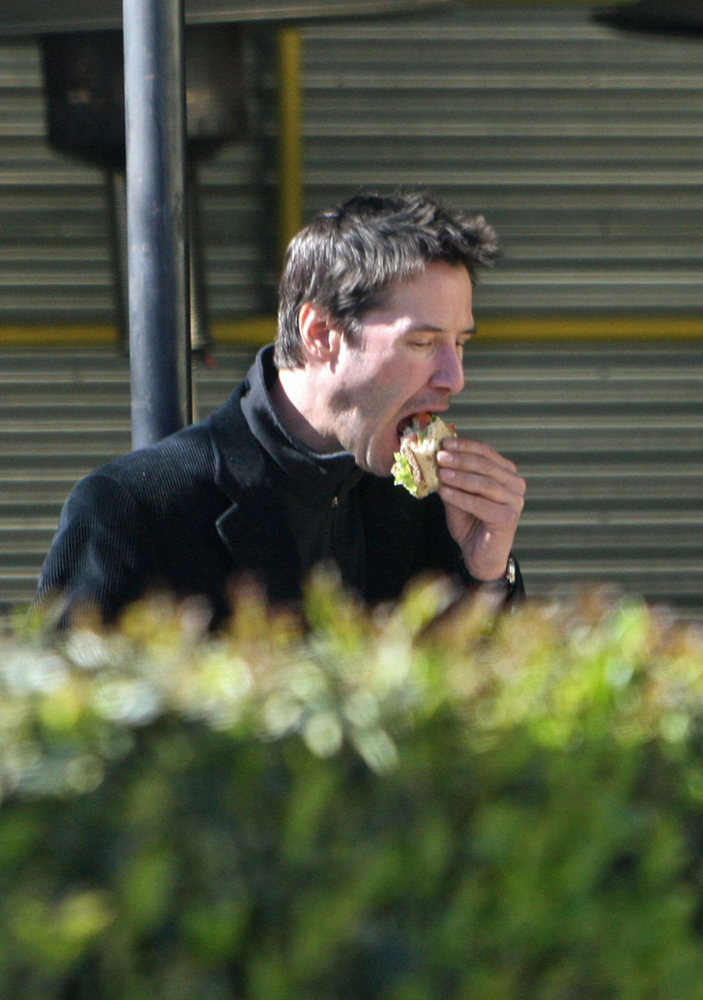

Who Knew Keanu?
Measuring The Myths Behind The Man From "No" to "Whoa"
Bunches of Lunches
Back in the late 90s and fresh out of college I got my first job as an assistant prop designer on the set of Chain Reaction (Keanu was a supporting actor with Morgan Freeman). EVERY DAY for the last few weeks of filming, Keanu treated the stage hands and “grunt workers” (including myself) by taking us out for free breakfast and lunch. He was genuinely a very nice guy to work with.
Since then, I’ve worked on about 30 different sets and have never met an actor as generous and friendly as him. Most actors I’ve seen and worked with are total douches who always think they are better than us. Keanu on the other hand, at the very least, was socially approachable and definitely kindhearted.
All I Want For Christmas Is A Harley
“I had a few friends working special effects jobs on the Matrix movies, he bought all of them fucking HARLEYS for Christmas during the shoot for the second one.
“One of those guys, Paul, said that Keanu was the most sincere, humble and lovely dude he’d ever met. Said he eschewed contact with the cast in favour of hanging out with the crew, was the only guy the martial arts coaches respected out of the whole cast, and was the bravest man he’s ever met. That scene in the first Matrix film, the assault on the office tower lobby – Keanu turned down earplugs for all the charges blowing everywhere taking ‘bullet holes’ out of pillars, walls etc, just for authenticity. When he turns and hides behind a pillar which explodes with bullets hitting it on both sides, Paul said ‘the entire crew was about 15 metres away, with ear protection, and all flinching anyway when the charges blew – Keanu just took it like a complete badass.'”

Ballin' On A Budget
Some reports say $35 million. Others say $80 million. A few even go as high as $125 million. Whatever the amount may be, Reeves has gone down in history for generously giving up some of his salary on the Matrix movies so that the special effects team could continue as needed.
That wasn’t the only time he’d taken a pay cut; both Al Pacino and Gene Hackman were hired on in some of his movies because he gave up millions to pay for their salaries. He literally created (and saved) jobs.